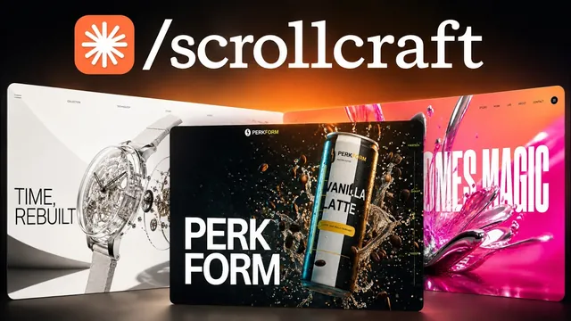

클로드 웹디자인 스킬 완성본 (그냥 가져가세요)

원본 영상 보기 →
- 템플릿이 아니라 질문으로 시작하면 "AI가 만든 티" 나는 획일적인 결과물을 피할 수 있어요
- 가진 자료는 그대로 쓰고, 없는 자료만 AI로 채우는 방식이 신뢰도를 지켜줘요
- 완성 전 자체 검증 단계가 첫 결과물의 완성도를 끌어올려요
한 줄 요약
클로드 코드(Claude Code)용으로 만든 무료 웹사이트 디자인 스킬 "스크롤크래프트(ScrollCraft)"를 소개하는 영상이에요. 자신이 운영하는 커뮤니티 사이트를 이 스킬로 실제로 다시 만들어보는 전 과정(인터뷰 → 이미지·영상 생성 → 자체 검증 → 피드백 반영)을 그대로 보여줍니다.
전체 내용 정리
스크롤크래프트란 무엇일까요
이 영상에서 소개하는 스킬의 이름은 스크롤크래프트(ScrollCraft)예요.
핵심 아이디어는 이렇습니다. 스크롤을 내릴 때마다 화면에 뭔가 반응이 일어나도록 만들어서, 방문자가 계속 페이지를 내리고 싶게 만드는 거죠.
이미 이 스킬로 만든 여러 사례를 예시로 보여주는데요. 여행을 판매하는 여행사 사이트, 소비재 브랜드 사이트, 자기 자신의 퍼스널 브랜딩 사이트까지 결과물이 저마다 다르게 나옵니다.
클로드 코드 데스크톱(Claude Code Desktop)에서 사용하는 것을 전제로 하며, 클로드 코드를 처음 다뤄본다면 먼저 자신의 6시간짜리 강의를 보고 오라고 안내해요.
스킬은 두 가지 방식으로 받을 수 있습니다. 설치형 플러그인으로 받거나, 폴더와 파일을 통째로 복사해 클로드 프로젝트에 넣는 방식이요.
템플릿이 아니라 인터뷰로 시작하는 설계 방식
이 스킬이 일반적인 AI 사이트 생성기와 다른 점은, 정해진 템플릿 하나를 반복해서 찍어내지 않는다는 거예요.
대신 스킬을 실행하면 먼저 인터뷰 과정이 시작됩니다. 어떤 유형의 웹사이트를 원하는지, 전달하고 싶은 느낌이 무엇인지를 묻죠.
방문자가 사이트를 실제로 열고 스크롤하면서 느낄 여정을 깊이 고려하도록 설계되어 있어요. 진행자는 이를 "짧은 영상 콘텐츠처럼, 처음에 확 끌어당기지 못하면 관심이 떨어진다"는 비유로 설명합니다.
그 결과 같은 스킬을 써도 매번 다른 톤과 스타일의 사이트가 나와요. 지금까지 만든 예시들도 전문적이고 편집숍 같은 느낌부터 에너지 넘치는 느낌까지 제각각이었다고 강조합니다.
AI 오토메이션 소사이어티 사이트로 실제 인터뷰를 진행해요
진행자는 자신이 운영하는 커뮤니티 AI 오토메이션 소사이어티(AI Automation Society)의 실제 사이트를 스크롤크래프트로 다시 만들어보기로 합니다.
원하는 톤으로는 이렇게 입력했어요. "프리미엄하고 신뢰감 있게, AI가 생성한 소재로 화려하게 날아다니는 느낌이 아니라 좀 더 에디토리얼하게."
이어지는 질문들에도 차례로 답합니다. 스크롤 여정의 순서(성과 수치인 '리시트'를 먼저 보여줄지, 자신의 스토리부터 보여줄지), 방문자가 사이트를 다 보고 나서 믿게 되길 바라는 한 문장(자신의 미션 선언문을 붙여넣었어요), 실제로 갖고 있는 자료(발표 사진 한 장, 커뮤니티 화상통화 모습 사진 한 장, 창업자 사진, 굿즈 사진)요.
마지막으로 "이 사이트만의 시그니처가 될 요소"를 묻는 질문에는 이렇게 답했습니다. "모든 주장에는 근거 자료가 붙는다. 출처 없이 단정하는 내용은 없다."
kie.ai로 부족한 이미지·영상을 채우고 harness가 스스로 검증해요
갖고 있는 자료만으로는 부족한 이미지는 kie.ai라는 서비스로 생성합니다.
오픈라우터(OpenRouter)가 텍스트 모델을 여러 개 골라 쓸 수 있게 해주는 것처럼, kie.ai는 여러 이미지·영상 생성 모델을 골라 쓸 수 있게 해주는 서비스라고 소개해요.
kie.ai에서 API 키를 발급받아 클로드 코드 프로젝트의 환경 변수에 넣어두면, 스킬이 필요할 때마다 알아서 이미지를 생성하고, 그 이미지를 영상으로 바꾸고, 필요하면 영상들을 이어 붙이는 작업까지 처리합니다.
이번 예시에서는 미니멀한 로우폴리(low poly) 스타일의 인물 일러스트를 브랜드 색상에 맞춰 추가로 생성해달라고 요청했어요.
이미지·영상 생성과 사이트 빌드가 끝나면 한 단계가 더 있습니다. 스킬이 완성된 페이지의 주요 장면들을 스스로 스크린샷으로 찍어 확대해서 들여다보며, 어색하거나 잘못된 부분이 없는지 검증하는 거죠. 사이트 하나를 만드는 데 걸린 시간은 약 30분이었다고 해요.
완성된 첫 버전을 스크롤로 훑어봐요
완성된 사이트는 첫 화면부터 편집숍처럼 정돈된 느낌을 줍니다.
스크롤을 내리면 커뮤니티 회원 수 같은 수치가 실시간으로 채워지듯 올라가고, 화면 왼쪽에는 "출처 0/9"라는 카운터가 있어서 스크롤할 때마다 근거 자료가 하나씩 열려요.
이어서 다크 모드로 전환되며 회원 수와 활동 지역이 늘어나는 지구본 애니메이션이 나옵니다(속도가 너무 빠르다는 피드백이 뒤에 이어져요). 실제 커뮤니티 화상통화 장면과 회원 글렌·캐스퍼·에이미의 후기가 등장하고요.
뒤이어 2025년 스쿨게임(Skool Games, 스쿨 플랫폼이 분기마다 여는 커뮤니티 성장 경쟁)에서 4전 4승했다는 리더보드 캡처 이미지가 나와요. 재미있는 건 이 이미지가 원래 사이트에는 없던 자료로, 스킬이 어딘가에서 알아서 찾아 넣은 것이었다는 점입니다.
창업자 소개(개발자 출신이 아니었고 아이오와 대학교를 졸업했다는 내용)와 자격증 과정을 설명하는 로우폴리 애니메이션 영상이 이어지고, 마지막에는 사이트 전체에서 언급한 9개 주장의 출처를 한 번에 정리해 보여주는 섹션으로 마무리됩니다.
피드백을 반영해 최종 버전을 완성해요
진행자는 완성본을 보고 구체적인 피드백을 줍니다.
처음 여는 히어로 섹션이 밋밋하다, 지구본 애니메이션은 마음에 들지만 회원 수 변화를 눈으로 따라갈 수 있도록 속도를 크게 늦춰달라, 창업자 섹션에도 스크롤 애니메이션을 추가해달라, 자격증 애니메이션은 좋지만 너무 빨리 지나가니 더 늘려달라, 자격증 링크는 실제 대기자 명단 페이지로 연결되도록 고쳐달라, 그리고 필요 없다고 판단한 "회원가입(register)" 섹션은 통째로 삭제해달라고요.
다음 버전에서는 요청한 대로 회원가입 섹션이 사라졌고, 히어로 섹션은 잡지 표지 같은 스타일로 바뀌었어요. 지구본 애니메이션 속도도 확연히 느려져 숫자 변화를 따라갈 수 있게 됐습니다.
이후 진행자는 특정 문구가 타이핑되듯 나타나는 효과도 추가로 시도해봐요. 세 회원의 얼굴이 한 명씩 순서대로 나타나는 애니메이션이 특히 마음에 든다고 언급하고요(다시 불러오면 나타나는 사소한 버그가 있긴 하다고 합니다). 카피 문구도 실제 기수(cohort) 내용에 맞게 더 구체적으로 다듬어졌다고 확인합니다.
영상은 스킬을 무료로 받는 방법(자신의 무료 스쿨 커뮤니티의 클래스룸 → All YouTube Resources)을 다시 안내하며 마무리돼요.
핵심 인사이트
- 템플릿이 아니라 질문으로 시작하면 "AI가 만든 티" 나는 획일적인 결과물을 피할 수 있어요: 톤, 스크롤 순서, 방문자가 믿어야 할 한 문장을 먼저 물어보고 시작하는 구조라서, 같은 스킬을 써도 사이트마다 느낌이 완전히 달라집니다.
- 가진 자료는 그대로 쓰고, 없는 자료만 AI로 채우는 방식이 신뢰도를 지켜줘요: 실제 발표 사진, 커뮤니티 사진, 창업자 사진은 그대로 활용하고 부족한 이미지·영상만 kie.ai로 생성했습니다. 전부 AI로 만든 사이트보다 훨씬 진짜 같은 느낌을 주죠.
- 완성 전 자체 검증 단계가 첫 결과물의 완성도를 끌어올려요: 사람이 시키지 않아도 스킬이 스스로 완성 화면을 스크린샷으로 찍어 확대해 검토한 뒤에야 작업을 마치기 때문에, 첫 시도부터 어색한 부분이 상대적으로 적게 나옵니다.
오늘 당장 해볼 것
- 지금 쓰고 있는 홈페이지나 소개 페이지를 열어놓고 "방문자가 이 페이지를 다 보고 나서 무엇을 믿길 바라는가"를 한 문장으로 직접 적어보세요. 이 한 문장이 명확하지 않으면 사이트를 아무리 예쁘게 고쳐도 효과가 떨어지거든요.
- 웹사이트나 소개자료를 맡기는 업체·디자이너에게 "우리 회사가 실제로 갖고 있는 사진·자료를 최대한 그대로 쓰고, 부족한 부분만 AI로 채워달라"고 구체적으로 요청해보세요.
- 회사 소개 페이지나 제안서에 적힌 수치·성과 주장 중에 출처나 근거가 붙어있지 않은 항목이 있는지 훑어보고, 있다면 출처를 달아두세요.